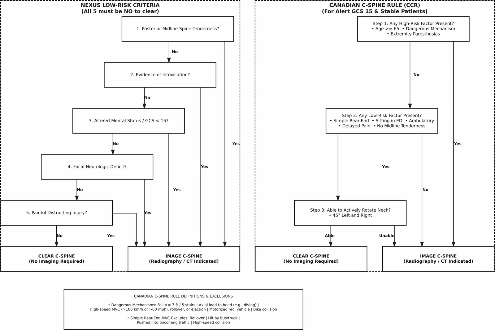
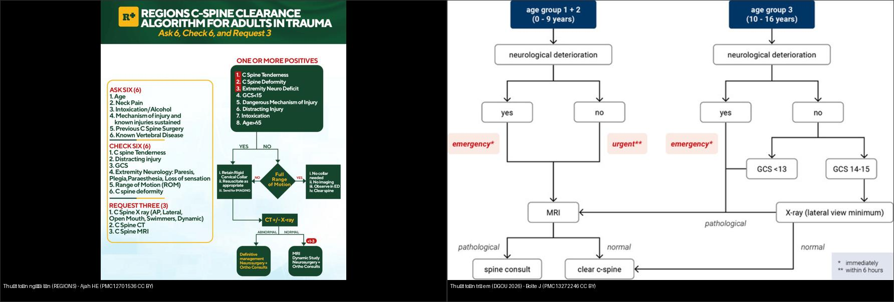
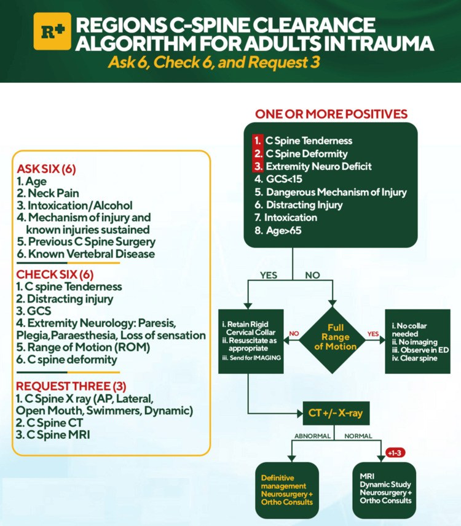
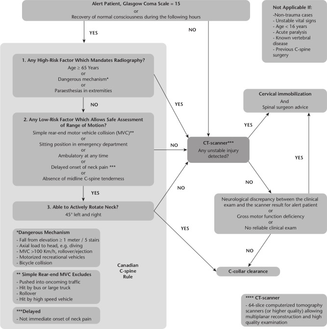
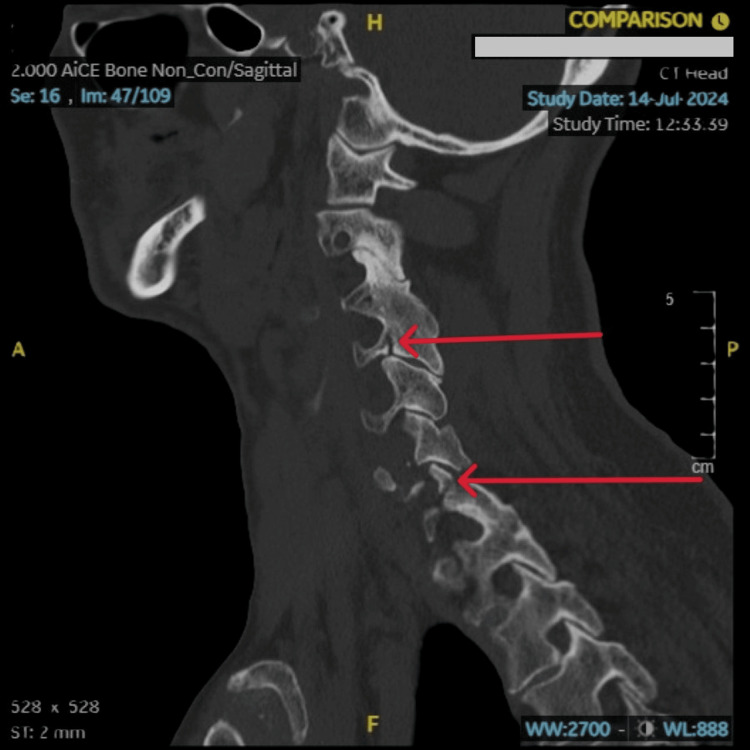
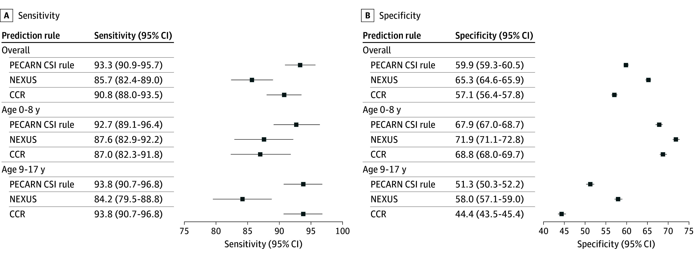

202 — Quy tắc quyết định chụp cột sống cổ cấp cứu: NEXUS & Canadian C-Spine Rule, khi nào bỏ nẹp cổ / Cervical spine clearance rules
Tags: pattern:chan-thuong-cot-song pattern:quy-tac-quyet-dinh vung:cot-song-co score:NEXUS score:Canadian-C-Spine-Rule score:PECARN-CSI protocol:CT-cot-song-co protocol:MRI-cot-song-co
Mức chắc chắn (certainty): tổng hợp y văn (literature synthesis) — tổng hợp từ nghiên cứu đoàn hệ dịch tễ (Vartiainen E et al., Emerg Radiol 2026, PMC13633157), so sánh hiệu năng quy tắc ở trẻ (Lee LK et al., JAMA Netw Open 2025, PMC12717614), tổng quan bỏ nẹp cổ (Moeri M et al., EFORT Open Rev 2020, PMC7197104), thuật toán phối hợp tại chỗ (Ajah HE & Nzekwu OO, Cureus 2025, PMC12701536), thuật toán nhi DGOU (Bolte J et al., Eur J Trauma Emerg Surg 2026, PMC13272246) và ca nguyên văn (verbatim case) gãy cột sống cổ đến muộn (Mahmood A & Abouelkheir M, Cureus 2025, PMC12001663).
1. Tổng quan — vì sao cần "quy tắc quyết định" thay vì chụp tất cả
- Bài toán lưỡng nan (double bind): bỏ sót thương tổn cột sống cổ (cervical spine injury — CSI) có thể gây liệt tứ chi/tử vong do di lệch thứ phát; nhưng chụp tràn lan làm tăng bức xạ (X-quang/CT), chi phí, thời gian cố định cổ và biến chứng của bất động kéo dài (loét do tì đè, viêm phổi, huyết khối). Quy tắc quyết định (clinical decision rule — CDR) sinh ra để chọn đúng người cần chụp, không phải để "chẩn đoán".
- TẠI SAO phải bỏ nẹp cổ (collar) đúng lúc: nẹp cứng giải quyết vấn đề cấp, nhưng để lâu gây hại. Bỏ nẹp chỉ hợp lệ khi đã loại trừ tổn thương mất vững (unstable injury) bằng lâm sàng (quy tắc âm) hoặc bằng hình ảnh (CT ± MRI). Nẹp cổ không phải điều trị — nó là cầu nối chờ xác nhận.
- Hai "định luật" hình ảnh nằm lòng:
- CT là chuẩn thực hành để loại trừ xương (bony clearance). X-quang thẳng/nghiêng/ngửa hầu như đã bị bỏ; CT có dựng đa bình diện (multiplanar reconstruction) mới đủ nhạy cho xương.
- MRI không dùng thường quy — chỉ khi có dấu hiệu tủy/thần kinh, bất tương xứng lâm sàng–hình ảnh (radio-clinical discrepancy), bệnh nhân không đánh giá được (hôn mê/đặt nội khí quản), hoặc đau cổ dai dẳng dù CT âm (Moeri M et al., EFORT Open Rev 2020, PMC7197104).
- Số liệu định lượng nằm lòng (định vị quy mô vấn đề):
- Đoàn hệ 9.359 bệnh nhân chấn thương chụp đồng thời CT sọ + CT cột sống cổ: gãy cột sống cổ 4,9% (457/9.359); bất thường nội sọ 23,9%; tổn thương đồng thời cả hai chỉ 1,3%; không có liên hệ ý nghĩa giữa CT sọ dương và gãy cổ (OR 1,16; p = 0,174); lưu lượng chụp tăng gấp 5 lần trong 10 năm nhưng hiệu suất chẩn đoán giảm từ 7,1% → 3,9% — bằng chứng lạm dụng chụp (Vartiainen E et al., Emerg Radiol 2026, PMC13633157).
- Ở trẻ: 22.430 trẻ chấn thương kín, CSI 1,9% (433) — thương tổn hiếm nhưng hậu quả nặng (Lee LK et al., JAMA Netw Open 2025, PMC12717614).
- Cơ chế (mechanism) là mảnh ghép không thể thiếu — đặc sản của Canadian C-Spine Rule: cơ chế năng lượng thấp (va chạm đuôi xe đơn thuần) khác hẳn cơ chế nguy hiểm (ngã ≥ 1 m/5 bậc, tải trục lên đầu, tai nạn tốc độ cao) → quyết định chụp khác hẳn dù cùng "đau cổ".

Hai quy tắc "ông tổ" đặt cạnh nhau: NEXUS — 5 tiêu chí nguy cơ thấp, cả 5 đều "KHÔNG" mới bỏ chụp; Canadian C-Spine Rule (CCR) — 3 bước (yếu tố nguy cơ cao → yếu tố nguy cơ thấp → xoay cổ chủ động 45°). NEXUS chỉ dùng lâm sàng; CCR còn dùng cơ chế chấn thương nên đặc hiệu cao hơn. Vartiainen E et al., Emerg Radiol 2026 (PMC13633157, Fig. 1), CC BY 4.0.2. Mẫu hình + chẩn đoán phân biệt theo bối cảnh (Gamut)
Đọc bài không theo "bệnh" mà theo bốn câu hỏi cửa vào — mỗi câu dẫn tới một nhánh quyết định:
- Bệnh nhân tỉnh (GCS 15), hợp tác, ổn định: dùng được cả NEXUS lẫn CCR. Đây là vùng quy tắc phát huy tối đa — CCR mạnh hơn vì thêm cơ chế và bước xoay cổ, giảm chụp oan.
- Bệnh nhân không đánh giá được (hôn mê, đặt NKQ, say): không thể áp dụng NEXUS/CCR (đều đòi bệnh nhân tỉnh). Con đường: CT cột sống cổ (xương) ± MRI (tủy/dây chằng) — nẹp giữ cho tới khi xác nhận.
- Bệnh nhân có dấu hiệu tủy/thần kinh (focal neurologic deficit, dị cảm): bỏ qua bước quy tắc → chụp ngay. Nghi ngờ tổn thương mạch máu cổ (bóc tách) → CTA/MRA cổ.
- Trẻ em: NEXUS và CCR được thiết kế cho người lớn — không dùng nguyên trạng. Dùng PECARN CSI rule (đặc hiệu cho trẻ), thận trọng với ART/ALARA.
Cơ chế "nguy hiểm" (dangerous mechanism) theo CCR — điều kiện định lượng bắt buộc nhớ: ngã ≥ 1 m hoặc ≥ 5 bậc thang; tải trục lên đầu (lặn, đâm đầu); tai nạn xe cơ giới tốc độ cao > 100 km/h (> 60 mph), có lật xe/phóng người khỏi xe; xe cơ giới giải trí; va chạm xe đạp. Cơ chế năng lượng thấp (simple rear-end) phải LOẠI các tình huống: bị đẩy ra làn xe ngược chiều, bị xe buýt/xe tải đâm, lật xe, xe tốc độ cao.
Gợi nhớ "5 ngón NEXUS" — không được THIẾU thì mới bỏ chụp: No posterior midline tenderness · No intoxication · Normal alertness (GCS 15) · No focal neurologic deficit · No painful distracting injury.
3. Bảng so sánh phân biệt (ma trận đối chiếu)
| Thực thể (entity) | Đặc điểm nhận diện | Chốt vào (rule-in → phải chụp) | Chốt loại (rule-out → bỏ chụp) | Gợi ý xác nhận |
|---|---|---|---|---|
| NEXUS (Hoffman 2000) | 5 tiêu chí lâm sàng thuần, không dùng cơ chế | Bất kỳ 1/5 tiêu chí dương (đau đường giữa, ngộ độc, GCS < 15, thiếu hụt TK khu trú, thương tổn gây đau phân tán) | Cả 5 tiêu chí đều ÂM | Nhẹ/trực quan nhưng độ đặc hiệu thấp (chụp nhiều hơn) |
| Canadian C-Spine Rule (Stiell 2001) | 3 bước: nguy cơ cao → nguy cơ thấp → xoay cổ 45° | Bước 1 DƯƠNG (tuổi ≥ 65 · cơ chế nguy hiểm · dị cảm chi) → chụp ngay | Bước 1 âm + bước 2 dương (nguy cơ thấp) + xoay cổ 45° được | Độ đặc hiệu cao hơn NEXUS (giảm chụp oan) |
| PECARN CSI rule (trẻ < 18) | 4 yếu tố lâm sàng đặc hiệu cho trẻ | Có rối loạn tri giác / thiếu hụt TK khu trú / đau–đau khi ấn vùng cổ / đầu nghiêng (torticollis) | Đủ 4 yếu tố âm + bệnh cảnh cho phép | Nhạy và NPV cao nhất ở trẻ; CT dự phóng thấp nhất |
| Bệnh nhân KHÔNG áp dụng được quy tắc | Hôn mê/đặt NKQ/say/không hợp tác/liệt sẵn | Luôn CT (± MRI) — không có ngoại lệ lâm sàng | Không có "chốt loại" lâm sàng | CT xương + MRI tủy; giữ nẹp tới khi xác nhận |
| Gãy cổ đến muộn (cạm bẫy) | Ban đầu "chỉ có vết rách nhỏ", được cho về | Dị cảm tay mới xuất hiện / đau cổ tăng khi vận động → hình ảnh lại | Không được "chốt loại" bằng một lần khám sạch | CT lại ± MRI (phù tủy xương) |

*Trái — thuật toán người lớn (REGIONS, phối hợp NEXUS + CCR): "Ask 6 · Check 6 · Request 3", phân nhánh theo biên độ vận động cổ → bỏ nẹp hay chụp. Phải — thuật toán trẻ em DGOU 2026: phân nhóm theo pGCS rồi theo tuổi (0–9 vs 10–16) và cơ chế, ưu tiên X-quang nghiêng cho trẻ nhỏ, MRI khi có dấu thần kinh. Ảnh ghép letterbox giữ tỷ lệ. Ajah HE (PMC12701536, CC BY 4.0) + Bolte J (PMC13272246, CC BY 4.0).*Hiệu năng định lượng — đọc con số, đừng nghe cảm tính
- Người lớn (Stiell 2003, dẫn trong Moeri 2020): 8.283 bệnh nhân, 169 thương tổn cột sống cổ quan trọng lâm sàng; NEXUS bỏ sót ~10%, CCR chỉ bỏ sót 1 ca; CCR đặc hiệu cao hơn (45,1% vs 36,8% của NEXUS) → giảm số lần chụp cần thiết.
- Trẻ em (Lee 2025, n = 22.430): độ nhạy PECARN 93,3% (90,9–95,7%) · CCR 90,8% (88,0–93,5%) · NEXUS 85,7% (82,4–89,0%); NPV tương ứng 99,8% / 99,7% / 99,6%. Áp dụng nghiêm ngặt → CT dự phóng: PECARN 6,9% · NEXUS 10,8% · CCR 13,2% (Lee LK et al., JAMA Netw Open 2025, PMC12717614).
- Kết luận thực hành: ở trẻ, NEXUS KHÔNG đủ nhạy (bỏ sót ~14% CSI) — không dùng NEXUS đơn độc cho trẻ.
4. Protocol chụp + quy tắc & lưu đồ
- Hình ảnh xương: CT cột sống cổ lát mỏng (≤ 1 mm) + dựng đa bình diện (MPR sagittal + coronal) là chuẩn; X-quang thẳng/nghiêng/ngửa đã bị bỏ cho bỏ nẹp. Đọc ba cột Denis (trước/giữa/sau) trên dựng hình (nối bài
221). - Hình ảnh tủy/dây chằng: MRI cột sống cổ (T2W/STIR sagittal + axial) khi: dấu tủy/thần kinh, bất tương xứng lâm sàng–hình ảnh, bệnh nhân không đánh giá được, hoặc đau cổ dai dẳng dù CT âm. MRI phát hiện phù tủy xương (bone marrow edema), tổn thương dây chằng, máu tụ ngoài/trong màng.
- Bỏ nẹp (collar removal):
- Bệnh nhân tỉnh, hợp tác, quy tắc ÂM → bỏ nẹp không cần hình ảnh.
- CT âm + không dấu thần kinh + xoay cổ được → bỏ nẹp.
- Không đánh giá được/hôn mê: CT âm có thể đủ ở nhiều trung tâm, nhưng nếu còn nghi ngờ tủy/dây chằng → MRI trước khi bỏ nẹp.
- Cờ đỏ bắt buộc chụp mạch: di lệch đốt sống cổ cao, gãy qua lỗ ngang (foramen transversarium) (đi qua động mạch đốt sống), hoặc bất tương xứng thần kinh → CTA/MRA cổ tìm bóc tách.
flowchart TD
A[Chấn thương cột sống cổ] --> B{Bệnh nhân tỉnh, GCS 15, hợp tác?}
B -->|Không| C[Không áp dụng NEXUS/CCR -> CT cot song co ± MRI; giữ nẹp]
B -->|Có| D{Có dấu hiệu tủy/thần kinh?}
D -->|Có| E[Chụp ngay: CT + MRI; nghi bóc tách -> CTA/MRA cổ]
D -->|Không| F{Người lớn hay trẻ?}
F -->|Trẻ < 18| G{Dùng PECARN CSI rule}
G -->|Đủ 4 yếu tố âm| H[Bỏ nẹp: không chụp]
G -->|Có yếu tố dương| I[Chụp theo cơ chế/tuổi: X-quang nghiêng hoặc CT]
F -->|Người lớn| J{Bước 1 CCR: yếu tố nguy cơ cao?}
J -->|Có| K[Chụp CT cột sống cổ]
J -->|Không| L{Bước 2 CCR: có yếu tố nguy cơ thấp?}
L -->|Không| K
L -->|Có| M{Xoay cổ chủ động 45 độ trái + phải được?}
M -->|Được| H
M -->|Không| K
H --> N{Đau cổ dai dẳng / bất tương xứng lâm sàng-hình ảnh?}
N -->|Có| O[MRI trước khi kết luận]
N -->|Không| P[Bỏ nẹp cổ: hoàn tất bỏ nẹp]

*Thuật toán phối hợp NEXUS + CCR tại một đơn vị thần kinh quy mô nhỏ: hỏi 6 · khám 6 · yêu cầu 3; nếu có 1 hoặc nhiều điểm dương → kiểm tra biên độ vận động cổ (full range of motion): có → bỏ nẹp; không → CT ± X-quang. Đây là minh họa cách "may đo" quy tắc quốc tế cho bối cảnh địa phương. Ajah HE & Nzekwu OO, Cureus 2025 (PMC12701536, Fig. 2), CC BY 4.0.*
*Bản đồ đầy đủ CCR: bệnh nhân tỉnh GCS 15 → bước 1 yếu tố nguy cơ cao → bước 2 yếu tố nguy cơ thấp → bước 3 xoay cổ 45°; kèm hộp tiêu chí loại trừ (không tỉnh/không ổn định, < 16 tuổi, liệt cấp, bệnh cột sống đã biết, đã mổ cổ trước đó). Moeri M et al., EFORT Open Rev 2020 (PMC7197104, Fig. 1), CC BY-NC 4.0 — nguyên bản.*5. Biến thể bình thường và cạm bẫy
- Cạm bẫy "một lần khám sạch = loại trừ": ca gãy cổ đến muộn (Mahmood & Abouelkheir, Cureus 2025, PMC12001663) — nam thất tuần sau tai nạn giao thông, ban đầu chỉ có vết rách trán, được cho về, hôm sau quay lại vì dị cảm tay trái; hình ảnh lại phát hiện nhiều đốt sống cổ gãy. Triệu chứng có thể xuất hiện muộn — giáo dục bệnh nhân dấu hiệu cảnh báo.
- Cạm bẫy "NEXUS dùng cho trẻ": NEXUS/CCR thiết kế cho người lớn; ở trẻ NEXUS chỉ nhạy 85,7% → không thay thế PECARN CSI rule.
- Cạm bẫy "tổn thương mạch đi kèm": gãy qua lỗ ngang (foramen transversarium) hoặc di lệch cao có thể kèm bóc tách động mạch đốt sống/cảnh — CT xương âm không loại trừ mạch; cần CTA/MRA khi có bất tương xứng.
- Cạm bẫy "bỏ nẹp bằng X-quang": phim thẳng/nghiêng bỏ sót tổn thương; phải CT MPR. Tránh "phim X-quang bình thường → bỏ nẹp" ở bệnh nhân nguy cơ.
- Cạm bẫy "vùng chồng lấp của dị cảm": dị cảm chi đơn thuần ở người trẻ chấn thương nhẹ thường lành, nhưng trong CCR nó là yếu tố nguy cơ cao → chụp; đừng chủ quan.
- Cạm bẫy "thương tổn gây đau phân tán (distracting injury)": vết thương lớn/đau nơi khác che lấp đau cổ → NEXUS mất giá trị (không thể khám đường giữa) → chuyển sang CT.
6. Tự lượng giá — Blind Quiz (ảnh trơn ngoài, đáp án trong)
Ca 1 — Nam thất tuần, tai nạn giao thông, ban đầu chỉ rách da trán; hôm sau dị cảm tay trái. Đọc CT:

- Gợi ý lâm sàng (clinical context): khám ban đầu "không dấu hiệu"; về nhà; tái khám vì dị cảm.
- Câu hỏi: Tìm bất thường xương ở đâu? Vì sao ca này là "cạm bẫy quy tắc"? Bước tiếp theo?
Bấm để hiện đáp án (findings + chẩn đoán)
- Dấu hiệu (findings): CT cửa sổ xương cho thấy gãy di lệch tối thiểu qua lỗ ngang (foramen transversarium) đốt C4 bên trái và tổn thương mỏm ngang — kèm bất thường mô mềm quanh.
- Chẩn đoán (diagnosis): gãy cột sống cổ nhiều đốt (cervical spine fracture) — biểu hiện muộn (dị cảm tay sau 1 ngày). Bài học: một lần khám sạch KHÔNG loại trừ; gãy qua lỗ ngang đòi hỏi CTA/MRA cổ loại trừ tổn thương mạch đốt sống.
- Nguồn ảnh: Mahmood A & Abouelkheir M, Cureus 2025 (PMC12001663, Fig. 2), CC BY 4.0.
Ca 2 — Bệnh nhân tỉnh, GCS 15, không dị cảm, đau cổ sau ngã. Nhìn lưu đồ CCR: có chụp không?
- Gợi ý lâm sàng: ngã thấp, tỉnh hoàn toàn, không dấu thần kinh.
- Câu hỏi: Bước 1 CCR có yếu tố nguy cơ cao nào? Nếu qua được bước 2 và xoay cổ 45° được thì kết luận gì?
Bấm để hiện đáp án (findings + chẩn đoán)
- Dấu hiệu (findings): bước 1 âm (không tuổi ≥ 65/cơ chế nguy hiểm/dị cảm) → sang bước 2 (yếu tố nguy cơ thấp) → bước 3 xoay cổ 45° hai bên được.
- Chẩn đoán (diagnosis): bỏ nẹp cổ, không chụp (quy tắc âm). Ngược lại, bất kỳ yếu tố nguy cơ cao hoặc không xoay được → CT cột sống cổ. Lưu ý tiêu chí loại trừ: không áp dụng cho bệnh nhân không tỉnh/không ổn định, < 16 tuổi, liệt cấp, bệnh cột sống đã biết.
- Nguồn ảnh: Moeri M et al., EFORT Open Rev 2020 (PMC7197104, Fig. 1), CC BY-NC 4.0 — nguyên bản.
Ca 3 — Trẻ chấn thương kín, nghi thương tổn cổ: quy tắc nào nhạy nhất? Đọc forest plot so sánh.

- Gợi ý lâm sàng: trẻ em, chấn thương kín, cần quyết định chụp.
- Câu hỏi: Quy tắc nào có độ nhạy/NPV cao nhất? NEXUS có đủ nhạy ở trẻ không?
Bấm để hiện đáp án (findings + chẩn đoán)
- Dấu hiệu (findings): forest plot cho thấy độ nhạy tăng dần: NEXUS 85,7% < CCR 90,8% < PECARN 93,3%; NPV PECARN 99,8% cao nhất; CT dự phóng PECARN 6,9% thấp nhất.
- Chẩn đoán (diagnosis): ở trẻ dùng PECARN CSI rule; NEXUS KHÔNG đủ nhạy (bỏ sót ~14%). Quy tắc quyết định giúp giảm chụp nhưng phải chọn đúng quy tắc theo tuổi.
- Nguồn ảnh: Lee LK et al., JAMA Netw Open 2025 (PMC12717614, Fig. 1), CC BY 4.0.
Ca 4 — Ảnh ghép: cùng "chấn thương cổ", hai thuật toán khác nhau. Nhìn và phân biệt bối cảnh áp dụng.
- Câu hỏi: Mỗi bên dành cho đối tượng nào? Khác nhau ở điểm vào (entry point) nào?
Bấm để hiện đáp án (findings + chẩn đoán)
- Dấu hiệu (findings): trái — người lớn: vào bằng "Ask 6 · Check 6" (NEXUS + CCR phối hợp), nhánh theo biên độ vận động cổ; phải — trẻ em: vào bằng pGCS rồi nhóm tuổi 0–9 vs 10–16 + cơ chế, thiên về X-quang nghiêng cho trẻ nhỏ.
- Chẩn đoán (diagnosis): không dùng chung một quy tắc cho mọi tuổi — NEXUS/CCR cho người lớn, PECARN/DGOU cho trẻ. Ảnh ghép letterbox giữ tỷ lệ (chỉ ghép 2 ảnh CC BY).
- Nguồn ảnh: Ajah HE (Cureus 2025, PMC12701536, CC BY 4.0) + Bolte J (Eur J Trauma Emerg Surg 2026, PMC13272246, CC BY 4.0).
Bài liên quan chéo
- 200 – Tổng quan Hệ Thần kinh (bảng DDx)
- 221 – Chấn thương cột sống: 3 cột Denis, TLICS (đọc tổn thương xương/mất vững)
- 223 – Chấn thương tủy sống: ASIA & SCIWORA (khi đã có tổn thương tủy)
- 224 – Chấn thương sọ não ở trẻ: PECARN & Marshall (quy tắc PECARN CT sọ)
- 220 – Ống sống 3 khoang (phân bố tổn thương theo khoang)
Ảnh
images/202_nexus-ccr_EmergRadiol_PMC13633157-Fig1-CCBY.webp— sơ đồ NEXUS + CCR (CC BY 4.0).images/202_thuat-toan-hybrid_PMC12701536-Fig2-CCBY.jpg— thuật toán phối hợp người lớn (CC BY 4.0).images/202_thuat-toan-hybrid_PMC12701536-Fig1-CCBY.jpg— bản "khái niệm ban đầu" của thuật toán (CC BY 4.0).images/202_thuat-toan-nhi_PMC13272246-Fig2-CCBY.jpg— thuật toán chỉ định chụp trẻ em DGOU 2026 (CC BY 4.0).images/202_phac-do-CCR_PMC7197104-Fig1-CCBYNC.jpg— lưu đồ CCR đầy đủ (CC BY-NC 4.0, nguyên bản).images/202_forest-pecarn-nexus-ccr_PMC12717614-Fig1-CCBY.jpg— forest plot so sánh 3 quy tắc ở trẻ (CC BY 4.0).images/202_gay-cot-song-co_CT_PMC12001663-Fig2-CCBY.jpg— ca gãy cổ đến muộn (CC BY 4.0).images/composite_202_thuat-toan-nguoi-lon-vs-nhi.jpg— ảnh ghép so sánh thuật toán (chỉ ghép ảnh CC BY).- Nguồn + giấy phép đầy đủ:
images/CREDITS.md; link gốc:sources.md.
Không dùng để chẩn đoán độc lập khi chưa có người hướng dẫn.